Mini-pat ontwerp en maak ’n model van ’n masjien om graan te vergruis
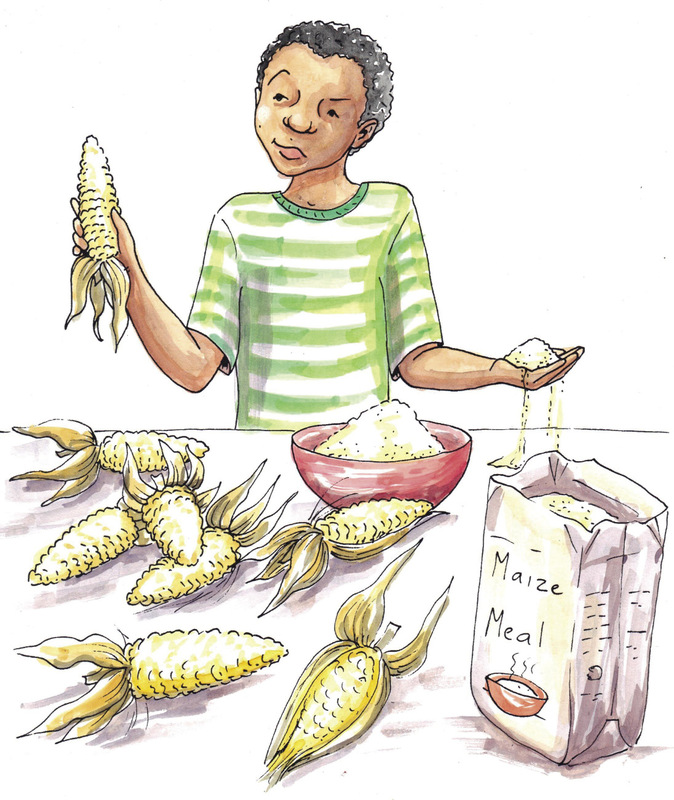
Figuur 1: Hoe word mielies mieliemeel?
 Figuur 2: Voordat masjiene uitgevind is om mieliepitte te
vergruis of te maal was harde werk nodig om
mieliemeel te maak.
individuele werk
Figuur 2: Voordat masjiene uitgevind is om mieliepitte te
vergruis of te maal was harde werk nodig om
mieliemeel te maak.
individuele werk.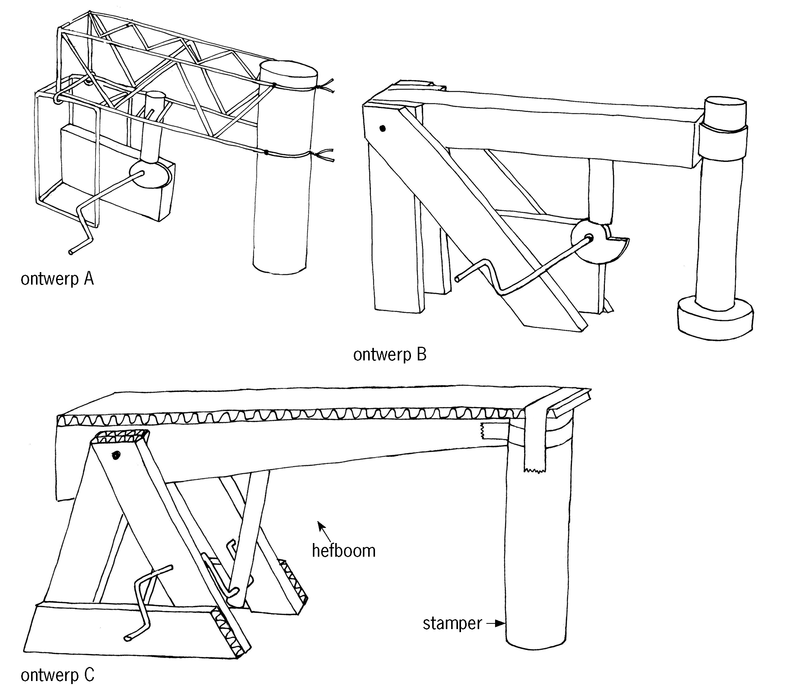
Figuur 3: Rowwe ontwerpe deur ander mense gemaak
Hoe sterk en stabiel is die struktuur?
Watter materiaal en gereedskap het jy
nodig om die struktuur te maak?
Hoe maklik sal dit wees om die struktuur
te maak?
Hoe hard en hoe vinnig sal die stamper
die vloer tref?
Wat is die meganiese voordeel van die
hefboom?
Jy gaan beoordeel word volgens die
laaste twee rye van die tabel, wat handel oor voordele en nadele.
|
Ontwerp
A
|
Ontwerp
B
|
Ontwerp
C
|
|
Sterkte en
stabiliteit van die
struktuur
|
|
|
|
|
Materiaal en
gereedskap
benodig
|
|
|
|
|
Hoe maklik om te
maak?
|
|
|
|
|
Hoe hard en hoe
vinnig sal die
stamper met die
vloer in aanraking
kom?
|
|
|
|
|
Meganiese
voordeel van die
hefboom
|
|
|
|
|
Voordele
|
|
|
|
|
Nadele
|
|
|
|
spanne van drie of
vier. Daar moet minstens een seun
en een meisie in elke groep wees. Elke leerder moet sy of haar eie antwoorde
hieronder neerskryf.
Skryf die
ontwerpopdrag.
’n Ontwerpopdrag sê vir jou wat die probleem is en
wie die oplossing gaan gebruik of voordeel daaruit trek.
(1)
’n Masjien om graan te vergruis sal
meestal deur ’n elektriese motor, wat
rotasiebeweging voorsien, aangedryf word. In jou model gaan jy nie ’n elektriese
motor gebruik nie, maar liewer die handvatsel van ’n krukas met die hand draai.
Hierdie rotasiebeweging moet in ’n wederkerende beweging verander word sodat
die graan vergruis sal word soos wanneer dit met ’n hamer geslaan word.
Die meganisme wat in jou model
gebruik word, moet binne ’n sterk en stabiele
raamwerk ingebou word.
Beantwoord die volgende vrae om
die
spesifikasies
vir jou ontwerp te identifiseer:
- Watter verskillende meganismes
kan die graanvergruiser laat werk?
(1)
- Watter kragte moet die
struktuur in staat wees om te weerstaan?
(1)
Identifiseer die
beperkings:
- Hoeveel tyd het ek om die model te
ontwerp en te bou?
(1)
- Watter materiaal kan ek maklik
in die hande kry om die model te bou?
(1)
- Watter gereedskap het ek reeds om
die model mee te bou?
(1)
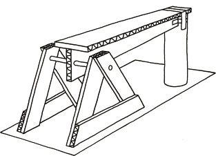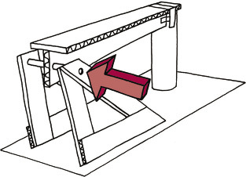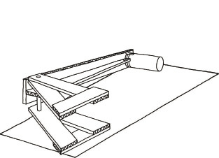
Figuur 4: ’n Struktuur vir ’n graanvergruiser wat nie sterk
genoeg is om kragte wat van die kant af daarop
inwerk te weerstaan nie.
Maak ’n rowwe skets van jou plan
hieronder om die struktuur te versterk. Elke
leerder in jou span moet sy of haar eie skets van sy of haar eie idee maak. Voeg
aantekeninge en byskrifte by die skets om jou ontwerp te verduidelik.
(4) Vergelyk die rowwe ontwerpe van
elkeen in julle span. Besluit dan gesamentlik
watter ontwerp julle gaan gebruik om die struktuur te versterk. Maak ’n
netjiese skets van hierdie ontwerp in die ruimte hieronder. Voeg aantekeninge en
byskrifte by die skets om die ontwerp te verduidelik.
(4)
Vergelyk die rowwe ontwerpe van
elkeen in julle span. Besluit dan gesamentlik
watter ontwerp julle gaan gebruik om die struktuur te versterk. Maak ’n
netjiese skets van hierdie ontwerp in die ruimte hieronder. Voeg aantekeninge en
byskrifte by die skets om die ontwerp te verduidelik.
(4)
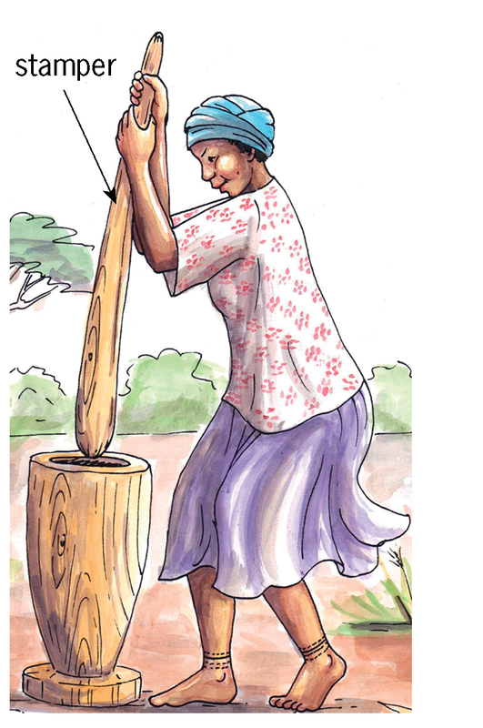
Figuur 5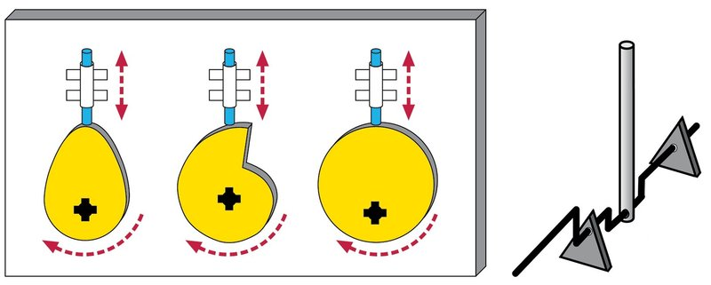
Figuur 6: Verskillende meganismes waaruit jy kan kies om
rotasiebeweging in
wederkerende beweging te verander
Watter meganisme het jy gekies
en hoekom?
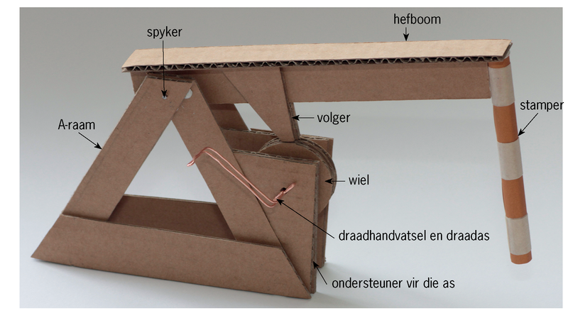
Figuur 7riffels in die regte rigting wys, soos deur die pyltjies op die tekeninge
aangetoon word.
Riffels is soos tonnels tussen die twee
buitenste lae van die karton. Riffelkarton is sterker in die een rigting as in
die ander rigting.
Elke lid van die span moet
sy of haar eie model bou.
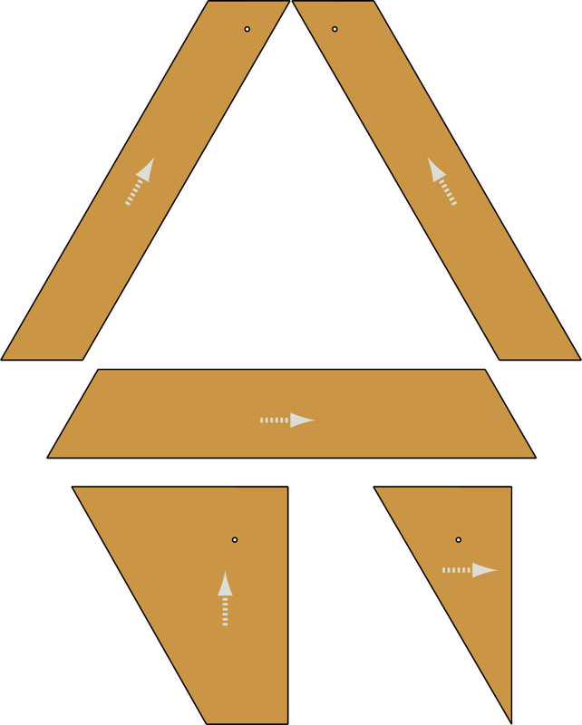
Figuur 8: Die onderdele van een
van die twee A-rame wat as ondersteuning vir die as dien.
 Figuur 9: Die onderdele van die hefboom en die volger
van
die nok wat daaraan vasgeheg sal wees.
Figuur 9: Die onderdele van die hefboom en die volger
van
die nok wat daaraan vasgeheg sal wees.
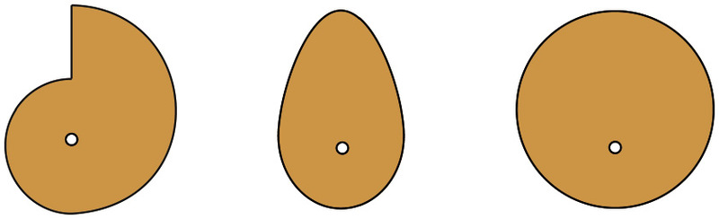
Figuur 10: Drie verskillende nokvorms
om van te kies.
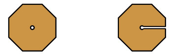
Figuur 11: Skeiringe wat op die asse
gebruik moet word
Hoe om die onderdele van jou model vas te heg
Ander materiaal wat jy nodig sal hê
Veiligheids-waarskuwing
Moenie enige koperdraad uit
elektriese bedrading verwyder
nie. As jy dit doen, kan jy
doodgeskok word en sal ander
mense nie die elektrisiteit kan
gebruik voordat die drade
reggemaak word nie. Jy kan
ook tronk toe gaan as jy
elektriese draad steel.
Ongewenste sywaartse beweging op die as
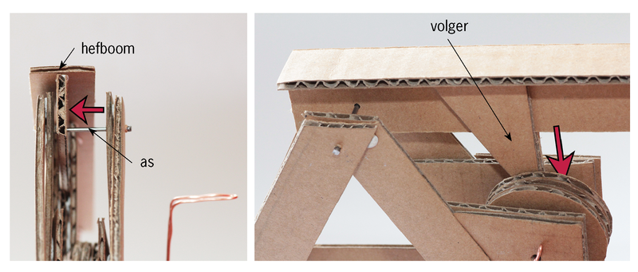
Figuur 13Puntetoekenning
Jy het die planne en instruksies
suksesvol gevolg en nagekom.
(4)
Jy het ’n meganisme gemaak om die
rotasiebeweging van die handvatsel in ’n wederkerende beweging van die stamper
te verander.
(3)
Die onderdele wat op asse draai, kan nie
sywaarts beweeg nie.
(2)
Jou model werk goed.
(3)
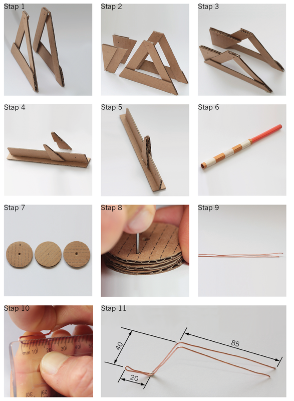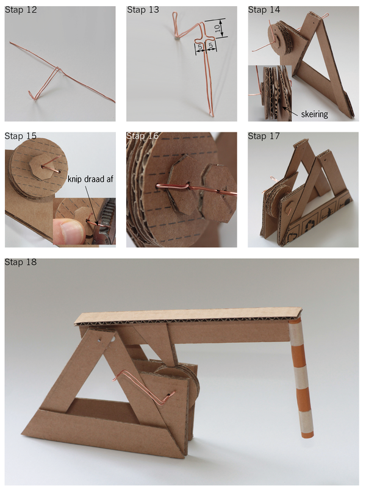
Figuur 12: Verskillende stappe om die model te bou
individuele werk.
Maak ’n werkstekening in 2D van die
dele wat jy tot die struktuur sal toevoeg
om te keer dat dit nie kan inmekaarval of omtuimel nie.
Die tekening wys akkuraat die ontwerp wat
jy op bladsy 92 geskets het.
(2)
Die tekening wys al die belangrike
afmetings. (2)
Die tekening is volgens skaal en die
skaal word aangedui.
(1)
Die tekening wys al die verborge lyne.
(1)
Maak ’n 3D isometriese tekening van
dit wat jy by die struktuur wil byvoeg.
Gebruik ’n liniaal.
Die tekening wys akkuraat die ontwerp wat
jy op bladsy 92 geskets het.
(2)
Die tekening wys die afmetings op die
korrekte wyse.
(3)
Die tekening is volgens skaal en die
skaal word aangedui.
(1)
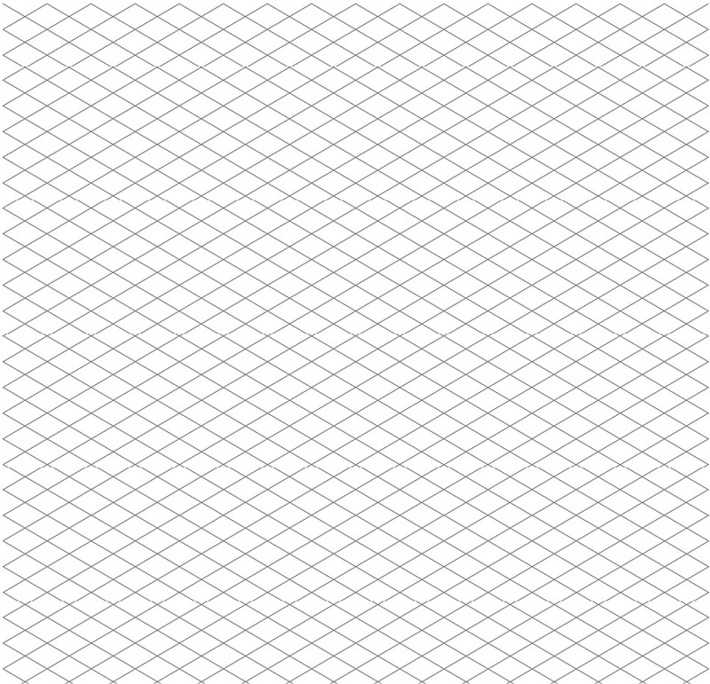 individuele werk, alhoewel
spanmaats mekaar mag help deur
idees onderling te deel.
 Figuur 14:
Nabyblik op ’n reghoekige raamwerk
Wenk:
Figuur 14:
Nabyblik op ’n reghoekige raamwerk
Wenk: kyk
weer na wat jy in
hoofstuk 4 oor beskaduwing geleer het.
Hoe verder dinge weg is, hoe kleiner lyk hulle.
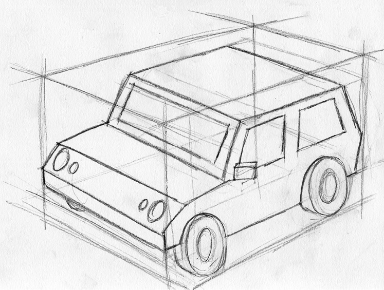
Figuur 15: Om van ’n gekompliseerde voorwerp ’n
perspektieftekening met ’n dubbel verdwynpunt te maak
Plaas hierdie
bladsy op ’n groot stuk koerantpapier. Verleng die lyne van die reghoekige
raamwerk om
te sien waar die verdwynpunte is.
Dit is maklik om te verstaan wat die
tekening wys.
(3)
Jy het eers ’n rowwe skets gemaak voordat
jy jou finale tekening gemaak het
(2)
Jy het ’n reghoekige kassie geteken
waarbinne die model kan inpas en gebruik
J
fyn lyne vir sigbare en verborge lyne.
(1)
Jy het die kassie in dubbel verdwynpunt
perspektief geteken, en verdwynpunte
gebruik wat ver weg is, en nie op die papier nie.
(2)
Jy het al die konstruksielyne met fyn lyne
aangetoon.
(1)
Jy het die buitelyne van jou model met
donker lyne aangetoon.
(1)
Jy het beskaduwing gebruik om die skets
realisties te laat lyk.
(2)
Laat jou model oor die naweek in die sorg van die
tegnologie-onderwyser.
Moet dit nie huis toe neem nie.